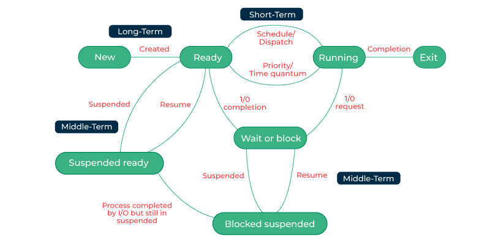
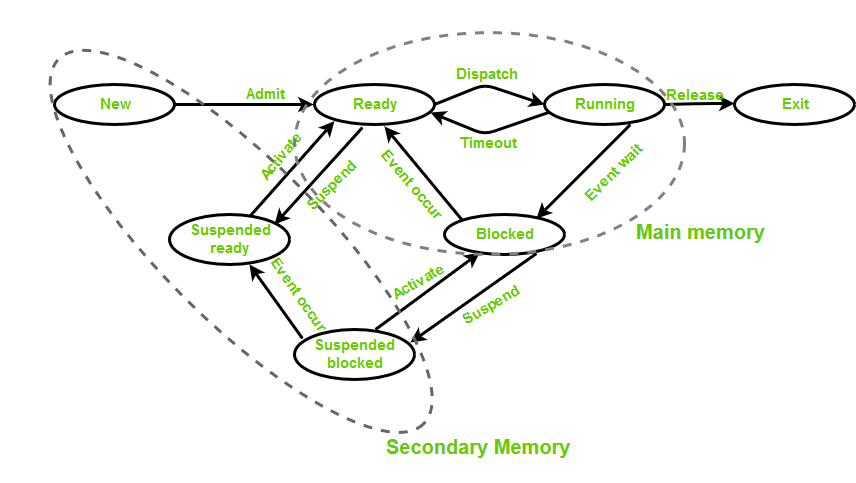
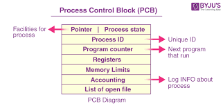
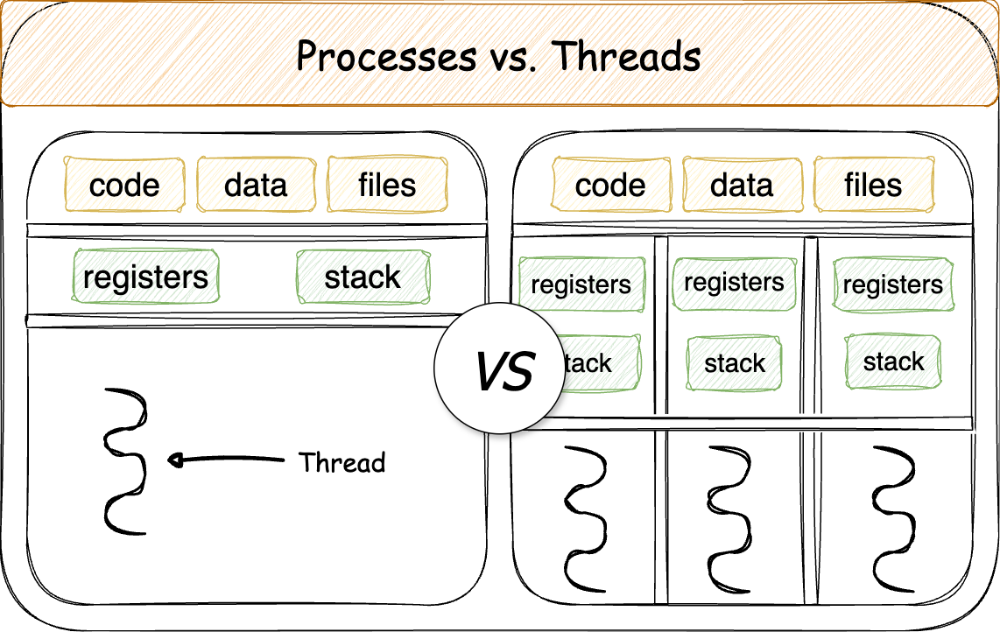
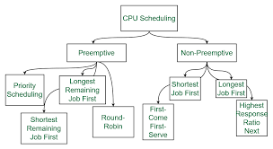
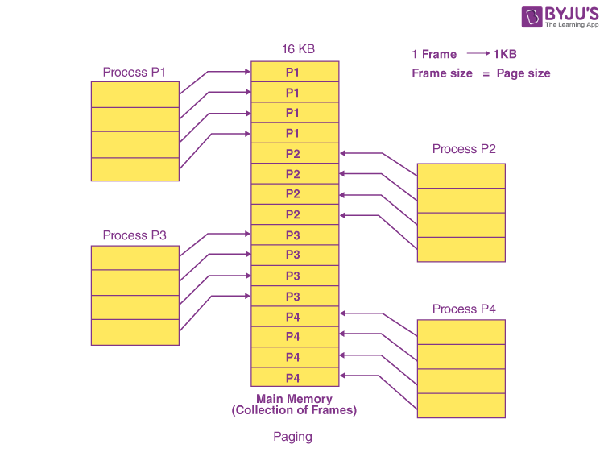
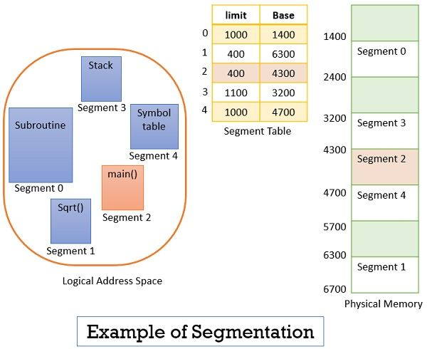
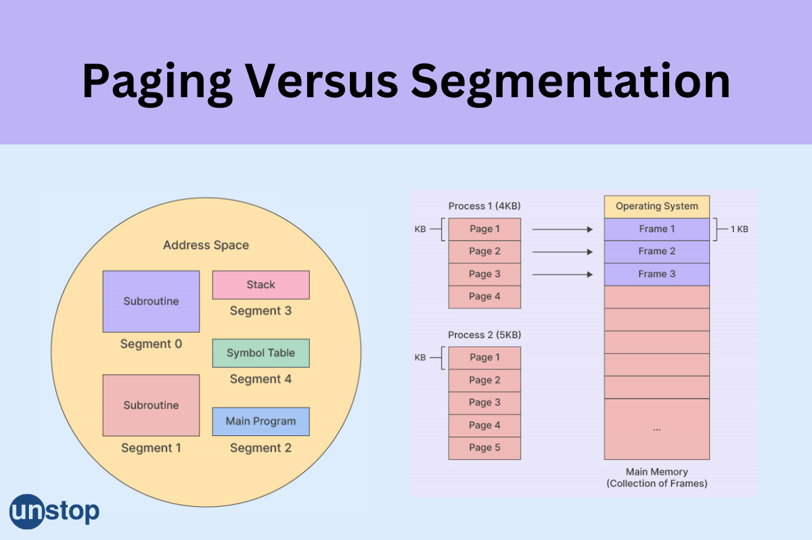
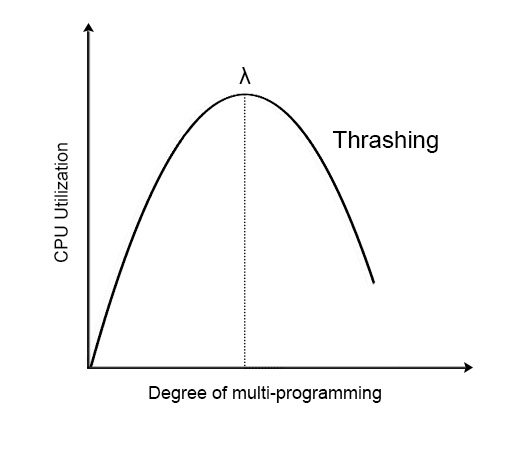
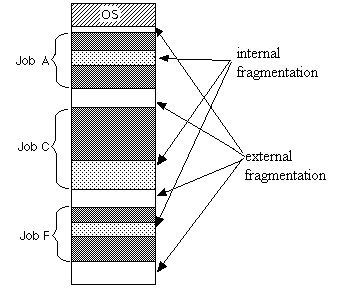

📝 OS Basics & Fundamentals (Brief Notes)
Operating System (OS)
An Operating System is system software that acts as an intermediary between the user and computer hardware. It manages resources and provides services for application programs.
Functions of OS
- Process Management: Creates, schedules, and terminates processes.
- Memory Management: Allocates and deallocates memory space.
- File System Management: Manages files, directories, and access permissions.
- I/O Management: Controls and coordinates input/output devices.
- Security & Protection: Safeguards data and system integrity.
Types of OS
- Batch OS: Executes jobs in batches without user interaction.
- Multitasking/Time-Sharing OS: Runs multiple tasks concurrently by switching CPU rapidly.
- Real-Time OS (RTOS): Responds to inputs instantly, used in critical systems.
- Distributed OS: Manages multiple computers and makes them appear as a single system.
System Calls
Kernel
Key Tip for Placements: Questions often test the difference between kernel types, real-time OS features, and examples of system calls.
📝 OS Process Management (Brief Notes)
Process
A process is a program in execution, containing program code, current activity, and allocated resources.


Process States
- New: Process is being created.
- Ready: Waiting to be assigned CPU.
- Running: Instructions are being executed.
- Waiting/Blocked: Waiting for I/O or event.
- Terminated: Process has finished execution.
PCB (Process Control Block): Data structure storing process information — process ID, state, program counter, CPU registers, memory info, I/O status.

Process vs. Thread
- Process: Independent execution unit with separate memory.
- Thread: Lightweight execution unit within a process; shares process memory.
Thread Types:
- User-level Threads: Managed by user-level libraries.
- Kernel-level Threads: Managed directly by the OS kernel.

Context Switching
- Process of saving the state of the current process and loading the state of another.
- Involves storing PCB of the current process and loading PCB of the next.
Process Scheduling
Purpose: Decide the execution order of processes to optimize CPU usage.

Scheduling Algorithms:
- FCFS: First come, first served (non-preemptive).
- SJF: Shortest burst time first (can be preemptive/non-preemptive).
- Priority Scheduling: Higher priority executes first.
- Round Robin: Equal time quantum for each process (preemptive).
- Multilevel Queue: Multiple queues based on process type, each with its own scheduling.
Preemptive Scheduling 👉 CPU can take away a process in the middle of execution and give it to another (higher priority or ready process).
Non-Preemptive Scheduling 👉 Once a process starts, it runs till completion or voluntarily releases CPU.
CPU Burst & I/O Burst:
- CPU burst: Time spent executing instructions.
- I/O burst: Time waiting for I/O operations.
Dispatcher:
- Module that gives control of CPU to the selected process.
- Scheduling Criteria: CPU utilization, throughput, turnaround time, waiting time, response time.
Key Tip for Placements: Be ready to calculate waiting & turnaround time for given scheduling problems.
📝 OS Interprocess Communication (IPC) Brief Notes
Definition
Interprocess Communication (IPC) allows processes to exchange data and synchronize their actions.
Shared Memory
- Memory segment accessible by multiple processes.
- Very fast but requires synchronization to avoid data inconsistency.
Message Passing
- Processes exchange messages via OS-managed communication channels.
- Safer than shared memory but slower due to system call overhead.
Pipes
- Pipes: One-way communication between related processes.
- Named Pipes (FIFOs): Can be used between unrelated processes.
Sockets
- Enable bidirectional communication between processes over a network.
Semaphores
- Integer variable used for process synchronization.
- Types: Binary (0/1) and Counting (non-negative integer).
Race Condition
- Occurs when multiple processes access shared data concurrently and the outcome depends on timing.
Critical Section Problem
- Part of code accessing shared resources; only one process should execute it at a time.
Synchronization Mechanisms
- Mutex: Locking mechanism allowing only one thread to access a resource.
- Semaphore: Signaling mechanism to control access.
- Monitors: High-level construct combining mutual exclusion and condition variables.
Key Tip for Placements: Focus on understanding synchronization problems (Producer–Consumer, Reader–Writer, Dining Philosophers) and applying mutex/semaphore solutions.
📝 OS Deadlock (Brief Notes)
Definition
Deadlock is a situation where two or more processes are stuck forever, because each one is waiting for a resource held by another.
Easy example
- Process A holds Resource 1 and waits for Resource 2
- Process B holds Resource 2 and waits for Resource 1
- ➡️ Both wait forever. This is deadlock.
Coffman’s Conditions (All must hold for deadlock to occur)
- Mutual Exclusion: Only one process can use a resource at a time
- Hold and Wait: A process holds one resource and waits for another.
- No Preemption: Resources cannot be forcibly taken away.
- Circular Wait: A circular chain of processes exists.
Deadlock Handling Methods
- Prevention: Ensure at least one Coffman condition never holds (e.g., request all resources at once to avoid hold and wait).
- Avoidance: Dynamically check resource allocation to ensure the system stays in a safe state (e.g., Banker’s Algorithm).
- Detection: Allow deadlock to occur and then detect it using methods like Resource Allocation Graph.
- Recovery: Once detected, terminate processes or preempt resources to break the deadlock.
Banker’s Algorithm
Resource Allocation Graph (RAG)
Key Tip for Placements: Practice detecting deadlock from RAG diagrams and solving Banker’s Algorithm numerical problems.
📝 OS Memory Management (Brief Notes)
Definition
Memory management is the process of controlling and coordinating computer memory, assigning portions to programs, and optimizing overall performance.
Memory Allocation Types
Paging
- Divides physical memory into fixed-size blocks (frames) and logical memory into blocks of the same size (pages).
- Page Table: Maps logical pages to physical frames.
- Eliminates external fragmentation.

Segmentation
- Divides memory into variable-sized segments based on logical divisions (code, data, stack).
- Each segment has a segment table with base address and limit.


Virtual Memory
- Technique allowing execution of programs larger than physical memory using disk storage.
- Implemented using demand paging.
Demand Paging
- Loads a page into memory only when it is needed by using Swap in or Swap out.
- Page Fault: Occurs when the required page is not in memory.
Page Replacement Algorithms
- FIFO (First In, First Out): Oldest page is replaced.
- LRU (Least Recently Used): Page not used for the longest time is replaced.
- Optimal: Replace the page that will not be used for the longest time in the future (requires future knowledge).
Thrashing
- Condition where excessive paging reduces CPU utilization.
- Caused by insufficient frames for processes.
- Solution: Reduce degree of multiprogramming or increase RAM.

Degree of Multiprogramming 👉 It is the number of processes present in main memory at a time (ready to execute).
➡️ Higher degree = better CPU utilization (up to a limit).
➡️ Too high degree = thrashing (too much swapping, low performance).
Key Tip for Placements: Practice numerical problems on page replacement and calculate page faults for given reference strings.
6. File Systems – Short Notes
1. File Attributes & Operations
-
Attributes: Name, type, size, location, creation/modification dates, permissions, owner.
-
Operations:
- Create, open, read, write, delete, append, truncate.
- Set permissions, rename.
2. File Allocation Methods
-
Contiguous Allocation:
- Files stored in consecutive blocks.
-
- Fast access; − External fragmentation.
-
Linked Allocation:
- Each block contains pointer to next block.
-
- No external fragmentation; − Slow random access.
-
Indexed Allocation:
- Index block stores addresses of all file blocks.
-
- Direct access; − Index overhead.

3. Directory Structures
- Single-level: All files in one directory.
- Two-level: Separate directory for each user.
- Tree-structured: Hierarchical directories.
- Acyclic graph: Allows shared subdirectories.
- General graph: Allows cycles (must handle carefully).
4. File System Mounting
- Process of making a file system available at a mount point in directory structure.
- Example: Mounting USB drive.
5. Access Control
- Owner / Group / Others permissions (Read, Write, Execute).
- Access Control Lists (ACLs): Define specific user access.
- Security: Prevent unauthorized file use.
💡 Placement Tip: Expect questions on allocation methods comparison, directory types, and UNIX/Linux permission system.
7. I/O Management – Short Notes
1. Device Drivers
- Software that acts as an interface between the OS and hardware devices.
- Handles communication, commands, and error handling.
- Types: Character drivers (keyboard, mouse), Block drivers (hard disk), Network drivers.
2. Disk Scheduling Algorithms
-
FCFS (First Come First Serve):
- Serve requests in arrival order.
-
- Fair; − Poor average seek time.
-
SSTF (Shortest Seek Time First):
- Serve request closest to current head position.
-
- Better average seek time; − May cause starvation.
-
SCAN (Elevator Algorithm):
- Head moves in one direction serving requests, then reverses.
-
- Reduces variance in seek time.
-
C-SCAN (Circular SCAN):
- Head moves in one direction serving requests; jumps back to start without serving on return.
-
3. RAID Levels
- RAID 0: Striping; no redundancy; high speed.
- RAID 1: Mirroring; high reliability; double storage cost.
- RAID 5: Block-level striping with distributed parity; balance of speed & fault tolerance.
- RAID 6: Like RAID 5 but with double parity; survives 2 disk failures.
💡 Placement Tip: Focus on pros/cons of each scheduling algorithm and when each RAID level is preferred.
8. Advanced Topics – Short Notes
1. Multi-threading in OS
-
Definition: Ability of a CPU to execute multiple threads concurrently within a single process.
-
Benefits: Faster execution, better CPU utilization, responsiveness.
-
Types:
- User-level threads (managed by user library).
- Kernel-level threads (managed by OS kernel).
- Hybrid models.
2. Producer–Consumer Problem
- Concept: Synchronization problem where producers generate data and consumers use it.
- Issue: Need to avoid race conditions and buffer overflows/underflows.
- Solution Tools: Semaphores, mutex locks, condition variables.
3. Reader–Writer Problem
-
Concept: Multiple readers can read simultaneously, but writers need exclusive access.
-
Variants:
- First readers–writers problem (no reader waits unless writer has access).
- Second readers–writers problem (no writer waits if writer is ready).
-
Solution: Reader–writer locks, semaphores.
4. Dining Philosophers Problem
- Concept: Illustrates deadlock and resource starvation in synchronization.
- Scenario: Philosophers alternate between thinking and eating, sharing limited chopsticks.
- Solution: Resource hierarchy, mutexes, avoiding circular wait.
5. Real-time OS (RTOS) Concepts
-
Definition: OS designed to serve real-time applications with deterministic response times.
-
Types:
- Hard RTOS: Strict deadlines (e.g., avionics).
- Soft RTOS: Occasional deadline misses tolerable (e.g., multimedia).
-
Features: Predictability, priority scheduling, minimal latency.
6. Useful Linux/Unix Commands
- Process Management:
ps, top, kill, nice, renice.
- Memory Management:
free, vmstat, top, htop.
- File & Permissions:
ls -l, chmod, chown, df, du.
💡 Placement Tip: In product-based interviews, focus on synchronization problems (producer–consumer, dining philosophers) and be ready to write pseudocode using semaphores or mutexes.